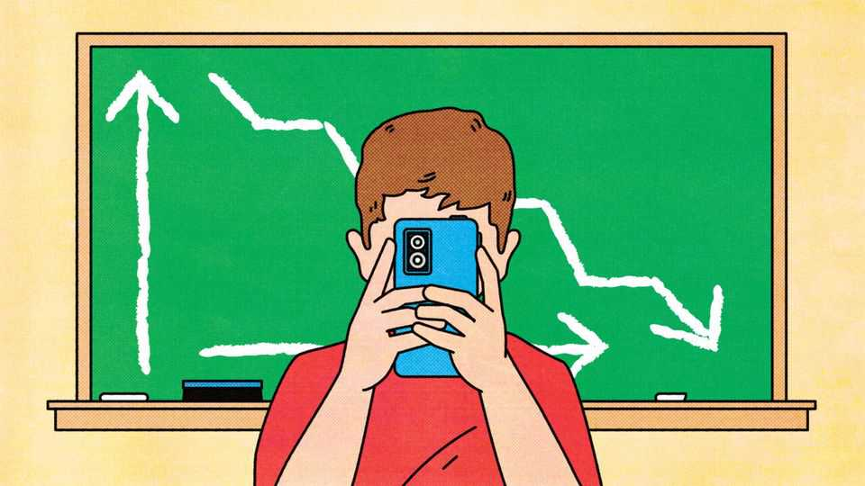

Plunging test scores are a slow-moving catastrophe
Machines are getting brighter. Teens are getting dimmer. Schools must act now

Sep 10th 2026
Schools in RICH countries are failing. The latest scores on PISA tests of reading, maths and science, released on September 8th, are the worst since the tests, administered by the OECD, began in 2000. Educators can no longer blame it all on covid-19 lockdowns, which badly messed up lessons and caused PISA grades to drop. The pandemic is now over, but scores have continued to fall roughly as fast. In 35 rich countries that take part in the tests, a typical 15-year-old now reads no better than a 14-year-old did a decade ago. A slow-motion disaster is under way.
Test scores are not the full measure of a child. But they are a good predictor of desirable outcomes and a bulwark against many of the worst ones. Kids who do well on tests tend to earn more, live longer and healthier lives, and commit fewer crimes. By one estimate, pushing up PISA scores by a mere quarter of a standard deviation might increase annual growth in rich countries by half a percentage point.
Perhaps, though, as artificial intelligence improves, the fact that children struggle intellectually will not matter so much? The adults of the future will be able to outsource their thinking to clever machines, just as they use machines to perform innumerable physical tasks. So why sweat about swotting?
This argument could not be more wrong. AI will not make it pointless to train human brains, any more than the invention of cars eliminated the need for physical exercise. On the contrary, adapting to a world of rapid, AI-driven change will require more mental agility, not less. And precisely because AI will increase the temptation for people to outsource difficult cognitive tasks, schools have an extra duty to help pupils exercise their brains and acquire the hard habits of thinking. Failure to furnish them with the basic building blocks of a well-developed mind, such as literacy and numeracy, is inexcusable.
PISA scores began drifting downwards around 2012. The evidence is growing that tablets, mobile phones and other such screens are distracting youngsters from their studies and diverting them from hobbies, like reading books, that instil the ability to focus. So limits on screens seem prudent. About half of countries now ban mobile phones from schools to some extent; more should follow. Used carefully, technology can benefit classrooms. More usually, snazzy new tools and devices just get in the way.
An even bigger problem, though, is muddle-headed thinking among educators. Some have fallen for the leftist canard that tests are harmful and grades are racist. Some have allowed reasonable worries about children’s mental health to warp into an excuse for low expectations. Some unhelpful habits acquired during the pandemic have stuck: children are still missing more lessons than before, and many teachers who relaxed their grading standards have failed to tighten up again.
What to do? There is little evidence that shovelling more cash into schools will make much difference: Japan spends 30% less per pupil than America and gets much better results. But research needs a big boost. Teaching, as a profession, remains shamefully uninterested in the evidence about which techniques work best. Education departments in universities contain some of the weakest and most radical staff, often keener on abstract ideas of social justice than the more concrete benefits that better grades might bring to pupils.
Places that have avoided declines deserve more attention. Britain is one. In 2009 its pupils scraped into the world’s top 30 in maths and reading. Now they sit in the top ten. Some of this stems from a return in England, under a previous Conservative government, to old-fashioned things such as rigorous exams, tough inspections and fact-filled curriculums.
Falling scores will not be fixed in a jiffy. Because it takes time to educate a child, the latest test results bear the marks of decisions taken ten to 20 years ago. That long lag makes reform politically harder. Governments that make schools better will seldom see benefits they can boast about before the next election. But they should care anyway. Politicians in past decades, from Tony Blair to George Bush, have won office promising to fix education. Today’s leaders seem to have cooled on schools, except as culture-war battlegrounds. That lack of serious attention invites calamity. As machines grow brighter, don’t let teenagers grow any dimmer. ■